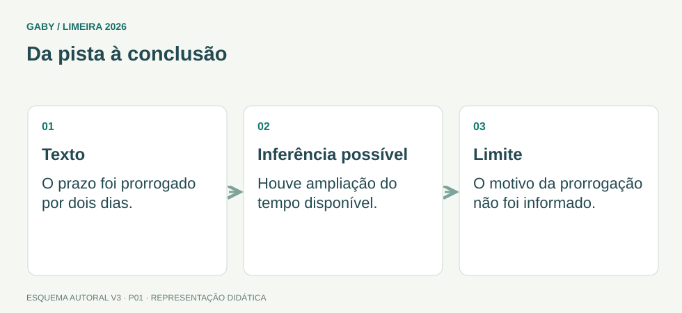

Objetivos do módulo
- Distinguir informação explícita de inferência.
- Identificar tema, ideia central, finalidade e ponto de vista.
- Reconhecer relações de causa, consequência, oposição, condição e conclusão.
- Evitar extrapolações e generalizações indevidas em alternativas.
- Diferenciar compreensão de interpretação e pressuposto de subentendido.
- Identificar o referente de pronomes e expressões (anáfora, catáfora, exófora, elipse e substituição) e reconhecer ambiguidades.
- Reconhecer o valor semântico dos conectivos, inclusive concessão, finalidade, proporção, explicação, retificação e exemplificação.
- Respeitar o alcance de quantificadores e restritores (todos, nem todos, alguns, nenhum, somente, exceto).
- Distinguir tipo e gênero textual, foco narrativo, vozes do texto e sequência temporal.
- Reconhecer sentido contextual, linguagem figurada e ironia.
- Analisar argumentos (dados, contraexemplo, analogia, autoridade, indução e dedução) e identificar falácias frequentes.
Da pista à conclusão

Descrição em texto do esquema
- Texto: O prazo foi prorrogado por dois dias.
- Inferência possível: Houve ampliação do tempo disponível.
- Limite: O motivo da prorrogação não foi informado.
Oficina visual · aplique o esquema
“Depois da abertura do canal digital, as filas diminuíram.” A frase prova que o canal foi a única causa da redução? Justifique.
Atividade autoral complementar da V3. Registre sua resposta; a resolução está no arquivo de gabarito e revisão.
Mapa do conteúdo
- 1. Compreender não é adivinhar
- 2. Explícito, implícito e inferência
- 3. Tema, ideia principal e finalidade
- 4. Conectivos e relações lógicas
- 5. Como eliminar alternativas
- 6. Coesão referencial: retomar, antecipar e apontar
- 7. Ambiguidade
- 8. Sentido contextual, linguagem figurada e ironia
- 9. Vozes do texto, sequência temporal e foco narrativo
- 10. Argumentação: tese, argumentos e falhas de raciocínio
1. Compreender não é adivinhar
Interpretar um texto significa construir sentido a partir das informações que ele efetivamente oferece. A resposta correta precisa ser sustentada por palavras, relações ou pistas do próprio texto. Conhecimento de mundo ajuda a compreender, mas não autoriza acrescentar fatos que o autor não apresentou.
Em prova, uma alternativa pode ser verdadeira na vida real e, mesmo assim, estar errada porque não responde ao texto. O critério é textual: pergunte sempre “qual trecho sustenta esta conclusão?”.
Compreensão × interpretação
As bancas usam os dois termos com sentidos diferentes. O comando da questão indica qual operação é pedida.
| Operação | O que se pede | Comandos típicos |
|---|---|---|
| Compreensão | Recuperar o que o texto diz, ainda que com outras palavras (paráfrase fiel). | “segundo o texto”, “o texto informa”, “de acordo com o autor” |
| Interpretação | Concluir algo que o texto não diz com todas as letras, mas autoriza pelas pistas. | “infere-se”, “depreende-se”, “o texto permite concluir”, “o autor sugere” |
Exemplo: “A biblioteca municipal passou a abrir aos sábados, e as salas de estudo ficaram lotadas nesse dia.” Compreensão: a biblioteca abre aos sábados. Interpretação válida: há procura pelas salas de estudo no sábado. Conclusão não autorizada: a biblioteca fechará em outro dia para compensar.
Roteiro de leitura para a prova
- Leia o comando antes do texto: ele diz se a questão pede localização, inferência, sentido de palavra, referência ou relação lógica.
- Leia o texto inteiro uma vez, sem olhar as alternativas. Identifique o assunto e a posição do autor.
- Volte ao trecho indicado e leia também a frase anterior e a seguinte: referências e conectivos dependem delas.
- Para cada alternativa, procure o trecho que a sustenta. Sem trecho, sem resposta.
- Compare a força das palavras: “pode” × “deve”, “alguns” × “todos”, “contribuiu” × “foi a única causa”.
2. Explícito, implícito e inferência
Informação explícita aparece de forma direta. Se o texto diz que o atendimento começa às 8h, não há inferência: basta localizar. A informação implícita exige uma dedução apoiada em pistas.
Inferir não é imaginar livremente. É combinar dados do texto de modo lógico. Quanto maior o salto entre o que foi dito e a alternativa, maior a chance de extrapolação.
| Tipo | Como reconhecer | Exemplo |
|---|---|---|
| Explícita | Está declarada | “A reunião começou às 9h.” → horário: 9h. |
| Inferida | Decorre de pistas | “Entrou com o guarda-chuva pingando.” → provavelmente chovia. |
| Extrapolada | Acrescenta informação sem apoio | “Entrou com guarda-chuva.” → veio de ônibus. |
Inferência válida × extrapolação
Inferência válida é a conclusão que decorre das informações do texto, necessariamente ou com forte apoio delas. Extrapolação é a conclusão que vai além dos dados: acrescenta causa, quantidade, tempo, lugar ou motivo que o texto não autoriza. A alternativa extrapolada costuma parecer razoável; por isso engana.
| Forma de extrapolação | Como aparece | Texto → alternativa errada |
|---|---|---|
| Generalizar a partir de uma amostra | O grupo ouvido vira “todos”, “a população”, “a cidade”. | “Numa enquete com 30 alunos do turno da noite, 18 pediram aulas aos sábados.” → “Os alunos da escola querem aulas aos sábados.” Válido seria: a maioria dos entrevistados do noturno (18 de 30, ou 60%) pediu aulas aos sábados. |
| Transformar sucessão em causa única | “Depois de” vira “por causa de” ou “graças exclusivamente a”. | “Depois que a praça ganhou iluminação, os furtos diminuíram.” → “A iluminação acabou com os furtos.” |
| Ampliar uma comparação delimitada | O que vale “neste caso” passa a valer “sempre”. | “Para trajetos curtos, a bicicleta é mais econômica que o carro.” → “A bicicleta é sempre mais econômica.” |
| Trocar possibilidade por certeza ou dever | “Pode” vira “vai” ou “deve”. | “A obra pode atrasar.” → “A obra vai atrasar.” |
| Acrescentar dado ausente | Preço, motivo, autor ou data que o texto não dá. | “O museu fecha às segundas-feiras.” → “O museu fecha às segundas para economizar energia.” |
Comparações encadeadas. Algumas questões pedem para ordenar elementos a partir de comparações. Monte a ordem só com as relações dadas: “O depósito B é maior que o C, mas menor que o A” permite a ordem C, B, A (do menor para o maior), e nada mais; não se sabe quanto cada depósito mede.
Pressuposto e subentendido
Há dois tipos de informação implícita cobrados com frequência:
- Pressuposto: informação implícita marcada por uma palavra ou expressão do próprio enunciado. Quem diz “A farmácia do bairro deixou de abrir aos domingos” afirma (é o posto) que ela não abre mais aos domingos e pressupõe que antes abria. O pressuposto está na língua, não depende da situação, e o ouvinte não pode recusá-lo sem recusar a frase.
- Subentendido: insinuação que depende do contexto e da intenção de quem fala. Numa sala fria, alguém olha para a janela aberta e diz: “Está frio aqui, não?”. Pode estar pedindo que fechem a janela. Quem fala pode negar a insinuação (“Só comentei o tempo”); o pressuposto, não.
Teste da negação: negue a frase ou transforme-a em pergunta. O que continua valendo é pressuposto. “A farmácia não deixou de abrir aos domingos” e “A farmácia deixou de abrir aos domingos?” continuam indicando que ela abria aos domingos.
| Marcador | Exemplo | Pressuposto |
|---|---|---|
| ainda | “O portão ainda está quebrado.” | O portão já estava quebrado antes. |
| já | “O resultado já saiu.” | Esperava-se a divulgação do resultado. |
| parar de, deixar de | “Rita deixou de usar o carro para ir ao trabalho.” | Rita usava o carro antes. |
| voltar a, tornar a | “O ônibus voltou a atrasar.” | O ônibus já atrasara antes e, por um tempo, deixou de atrasar. |
| continuar, permanecer | “A vaga continua aberta.” | A vaga estava aberta antes. |
| de novo, novamente, outra vez, também | “O sistema caiu de novo.” | O sistema já tinha caído antes. |
| novo, outro (adjetivos) | “O novo diretor tomou posse.” | Havia um diretor anterior. |
| verbos que dão o fato como verdadeiro (saber, descobrir, lamentar que) | “Ele descobriu que a reunião fora cancelada.” | A reunião foi de fato cancelada. |
| até (inclusivo) | “Até o gerente compareceu.” | Outras pessoas compareceram, e a presença do gerente era menos esperada. |
Na prova, a alternativa que contradiz o pressuposto costuma usar “nunca”: se algo “voltou a funcionar”, é falso dizer que nunca funcionou.
3. Tema, ideia principal e finalidade
Tema é o assunto geral; costuma caber em poucas palavras. Ideia principal é o que o texto afirma sobre esse tema. Em um texto sobre digitalização de serviços públicos, o tema pode ser “serviços digitais”, enquanto a ideia principal pode ser “a digitalização aumenta a eficiência, mas exige inclusão digital”.
A finalidade responde ao propósito comunicativo: informar, explicar, orientar, persuadir, regulamentar, criticar, narrar, entre outros. O gênero dá pistas, mas a finalidade deve ser confirmada pelo conteúdo.
Ideia central e título adequado
Para achar a ideia central, junte o tema ao que o texto afirma sobre ele e teste a frase obtida: ela precisa abranger o texto todo, sem se prender a um detalhe e sem dizer mais do que o texto diz. O título adequado segue o mesmo critério: resume o conjunto, não contradiz nenhum fato e não acrescenta fatos novos.
Exemplo: “Um terreno baldio ao lado da escola foi transformado em horta. Os alunos cuidam dos canteiros, e as verduras colhidas reforçam a merenda.” Título adequado: “Horta em terreno baldio reforça a merenda escolar”. Inadequados: “Alunos abandonam a horta” (contradiz o texto), “Escola recebe verba federal para horta” (acrescenta dado), “Canteiros” (detalhe, não síntese).
Finalidade e estrutura problema–solução
A finalidade se confirma pelos recursos do texto: verbos no imperativo e passos (“retire”, “apresente”, “aguarde”) indicam orientação; fatos no passado com personagens indicam narração; dados e explicações indicam informação; tese e argumentos indicam persuasão.
Muitos textos curtos seguem a estrutura problema → solução: a primeira frase apresenta uma dificuldade, e a seguinte, a medida tomada. Em “Pacientes esperavam semanas por consulta. A unidade de saúde contratou dois clínicos.”, a segunda frase apresenta a providência; ela não explica a origem do problema.
Tipologia textual × gênero textual
Tipo textual é o modo de organização da linguagem, reconhecido por traços internos: tempos verbais, relações lógicas, vocabulário. Costumam ser cobrados cinco tipos: narração, descrição, exposição, argumentação (dissertação) e injunção. Gênero textual é o texto concreto que circula na sociedade, definido pela situação de comunicação, pelo suporte e pelo propósito: notícia, receita, edital, ofício, bula, crônica, aviso. Um gênero pode combinar vários tipos (a receita descreve os ingredientes e instrui no modo de preparo), mas costuma ter um predominante.
| Tipo | Traços | Gêneros em que costuma predominar |
|---|---|---|
| Narrativo | Fatos em sequência, personagens, tempo, espaço, narrador; verbos no passado. | Conto, crônica, relato pessoal, notícia (no relato do fato). |
| Descritivo | Características de seres, objetos e lugares; verbos de estado; adjetivos. | Classificado de imóvel, retrato de personagem, trechos descritivos de relatórios. |
| Expositivo | Apresenta e explica informações e conceitos, sem defender tese. | Verbete, artigo de divulgação científica, texto didático. |
| Argumentativo | Tese, argumentos, conectivos de causa, oposição e conclusão; quer convencer. | Artigo de opinião, editorial, carta do leitor. |
| Injuntivo | Orienta o leitor a agir; imperativo ou infinitivo, passos numerados. | Receita (modo de preparo), manual de instruções, aviso, regras de edital. |
Como reconhecer: pergunte “o que o texto quer de mim?”. Se quer que eu acompanhe fatos, é narrativo; que eu visualize, descritivo; que eu entenda, expositivo; que eu concorde, argumentativo; que eu aja, injuntivo.
Intenção do autor, ponto de vista, fato e opinião
Fato é o que pode ser verificado (datas, números, acontecimentos). Opinião é o juízo de valor de alguém sobre os fatos. O ponto de vista do autor aparece nas escolhas de linguagem:
- adjetivos e advérbios avaliativos: “medida acertada”, “infelizmente”, “lamentavelmente”;
- verbos e expressões de opinião: “acredito”, “parece-me”, “é inaceitável que”;
- palavras com carga positiva ou negativa para o mesmo fato: “gasto” × “investimento”;
- aspas de distanciamento, que mostram que o autor não assume a palavra: a “economia” do contrato saiu cara;
- avaliação atribuída a outra pessoa: em “Para o diretor, foi a melhor gestão”, a opinião é do diretor, não do autor.
Exemplo: “A prefeitura gastou R$ 2 milhões na reforma do teatro, uma obra que valeu cada centavo.” Fato: o gasto. Opinião do autor: “valeu cada centavo”. A intenção é defender a obra, não só informar o valor.
4. Conectivos e relações lógicas
Conectivos funcionam como placas de trânsito do texto. Eles indicam como uma ideia se relaciona à outra. Trocar um conectivo pode alterar profundamente o sentido.
| Relação | Marcas frequentes |
|---|---|
| Causa/explicação | porque, pois, visto que |
| Consequência/conclusão | por isso, portanto, logo |
| Oposição | mas, porém, entretanto, contudo |
| Concessão | embora, ainda que, mesmo que |
| Condição | se, caso, desde que |
| Adição | e, além disso, bem como |
Valor semântico dos conectivos em detalhe
O mesmo valor pode ser expresso por conectivos diferentes, e o mesmo conectivo pode ter valores diferentes. Por isso, a pergunta certa é “que relação existe entre estas duas ideias?”, e não “que palavra é esta?”. A classificação abaixo é a da gramática normativa tradicional.
| Relação | Conectivos | Exemplo | Como reconhecer |
|---|---|---|---|
| Causa | porque, como (no início do período), visto que, já que, uma vez que, na medida em que | “Como a ponte estava interditada, o caminhão fez outro trajeto.” | Responde “por quê?”; o fato que traz vem antes do outro. |
| Consequência | de modo que, de forma que, tão… que, tanto… que, tamanho… que | “Choveu tanto que a rua alagou.” | Traz o efeito; aceita a troca por “por isso”. |
| Concessão | embora, ainda que, mesmo que, se bem que, posto que, apesar de (que); mesmo assim, ainda assim | “Embora estivesse cansado, o motorista concluiu a viagem.” | Há um obstáculo que não impede o fato principal; “embora” pede subjuntivo. |
| Oposição (adversativa) | mas, porém, contudo, todavia, entretanto, no entanto | “A sala é ampla, mas mal ventilada.” | A segunda ideia contraria a expectativa criada pela primeira e costuma pesar mais. |
| Condição | se, caso, desde que, contanto que, a menos que | “Caso o tempo melhore, o jogo será amanhã.” | O fato principal depende da condição: é hipótese, não fato consumado. |
| Finalidade | para (+ infinitivo), para que, a fim de (que) | “A secretaria ampliou a letra do edital para facilitar a leitura.” | Responde “para quê?”; indica objetivo, posterior à ação. |
| Conclusão | logo, portanto, por isso, por conseguinte, assim, então, pois (depois do verbo) | “O prazo terminou; não aceitaremos, pois, novas inscrições.” | Deduz algo do que foi dito antes. |
| Explicação | pois, porque, que (antes do verbo, depois de ordem, pedido ou opinião) | “Leve o guarda-chuva, que vai chover.” | Justifica a afirmação ou o pedido anterior. |
| Proporção | à medida que, à proporção que, ao passo que, quanto mais… (mais/menos), quanto menos… | “Quanto mais cedo a inscrição for feita, menor será a espera.” | Duas grandezas variam juntas, no mesmo sentido ou em sentido inverso. |
| Tempo | quando, assim que, logo que, depois que, antes que, enquanto | “Assim que o sinal tocou, os alunos saíram.” | Situa um fato em relação a outro no tempo. |
| Comparação | como, assim como, tal qual, mais… (do) que, menos… (do) que | “O novo prédio é mais alto que o antigo.” | Aproxima ou gradua dois termos. |
| Conformidade | conforme, segundo, consoante, como | “Conforme o regulamento prevê, a prova durará quatro horas.” | Indica acordo com uma fonte ou norma. |
| Adição | e, nem, além disso, também, não só… mas também | “Ele não só revisou o texto, mas também o formatou.” | Soma informações na mesma direção. |
| Alternância | ou, ou… ou, ora… ora, quer… quer | “Ora chove, ora faz sol.” | Apresenta opções ou fatos que se alternam. |
| Retificação | ou melhor, aliás (quando corrige) | “Convidei cinco, aliás, seis colegas.” | A segunda informação corrige e substitui a primeira. |
| Reformulação | isto é, ou seja, quer dizer | “O evento é bienal, ou seja, ocorre a cada dois anos.” | A segunda parte esclarece a primeira, sem alterá-la. |
| Exemplificação | por exemplo, como, a exemplo de, entre eles | “Alguns alimentos, como o feijão e a lentilha, são ricos em ferro.” | Os itens citados são casos da afirmação geral; não a esgotam nem a contrariam. |
Casos que mais confundem
- Concessão × oposição. As duas exprimem contraste, mas a construção muda. “Embora estudasse, não passou” (concessiva, subjuntivo) equivale a “Estudava, mas não passou” (adversativa, indicativo). Ao trocar um conectivo pelo outro, ajuste o modo verbal: “Porém estudasse, não passou” é construção errada.
- “Pois” explicativo × conclusivo. Antes do verbo, justifica: “Saia cedo, pois o trânsito está ruim”. Depois do verbo, entre vírgulas, conclui: “O trânsito está ruim; saia, pois, mais cedo”.
- “Como” pode indicar causa (“Como faltou luz, a aula foi suspensa”), comparação (“Trabalha como um relógio”), conformidade (“Fiz como você orientou”) e exemplificação (“frutas cítricas, como a laranja”).
- “À medida que” × “na medida em que”. A primeira indica proporção (“À medida que a obra avança, o trânsito melhora”); a segunda indica causa (“Na medida em que faltam médicos, as consultas atrasam”).
- Causa × finalidade. A causa é anterior ao fato e o explica; a relação de finalidade aponta o objetivo, posterior à ação. “Fechou a janela porque ventava” (causa) × “Fechou a janela para não entrar poeira” (finalidade).
- Causa × consequência. Na mesma frase, uma ideia é a causa e a outra, a consequência. Em “O asfalto estava molhado; por isso, o ônibus reduziu a velocidade”, “por isso” introduz a consequência; a causa é o asfalto molhado.
- Condição × fato. A oração condicional apresenta hipótese. Em “Caso o tempo melhore, o jogo será amanhã”, nada garante que haverá jogo; a alternativa que trata o jogo como certo está errada.
5. Como eliminar alternativas
Antes de escolher, compare a intensidade da alternativa com a intensidade do texto. “Alguns” não significa “todos”; “pode” não significa “deve”; “frequentemente” não significa “sempre”. Bancas exploram palavras absolutas para criar conclusões fortes demais.
Também desconfie de alternativas que invertem causa e consequência, trocam o agente da ação ou apresentam uma informação secundária como se fosse a tese central.
Quantificadores e restritores
Palavras como “todos”, “alguns” e “somente” definem o alcance da afirmação. Muitas alternativas erradas mudam só esse alcance.
| Expressão | O que garante | O que não garante | Exemplo |
|---|---|---|---|
| todos, todo, sempre (afirmação universal) | Vale para cada elemento do grupo. | Um único caso contrário a derruba. | “Todos os inscritos receberam a senha.” |
| nem todos | Ao menos um elemento não tem a característica. | Que nenhum a tenha; quantos a têm. | “Nem todos os ônibus têm ar-condicionado.” → pelo menos um não tem; vários podem ter. |
| alguns, parte de | Existe ao menos um elemento com a característica. | Que sejam muitos, a maioria ou todos. | “Alguns candidatos faltaram.” → houve faltas; não se sabe quantas. |
| nenhum, ninguém, nunca | Nenhum elemento tem a característica. | — | “Nenhum documento foi extraviado.” |
| somente, apenas, só | Restringe a afirmação a um caso ou condição. | Que quem cumpre a condição seja obrigado a agir. | “O desconto vale somente para pagamento à vista.” → pagamento a prazo fica sem desconto; ninguém é obrigado a pagar à vista. |
| exceto, salvo, com exceção de | Retira um elemento do alcance da regra. | O que acontecerá com o elemento excluído, se o texto não disser. | “Todos os setores funcionarão no feriado, exceto o protocolo.” → o protocolo fica fora do funcionamento anunciado. |
Negação do universal. O contrário de “todos participaram” não é “ninguém participou”, mas “nem todos participaram” (pelo menos um não participou). Para negar uma regra universal, basta um caso contrário: é o contraexemplo (seção 10).
6. Coesão referencial: retomar, antecipar e apontar
Coesão é a ligação entre as partes do texto. Há coesão referencial quando uma palavra só pode ser entendida a partir de outro elemento, o referente. Perguntar “a que se refere” um pronome ou uma expressão é uma das cobranças mais comuns. O Manual de Redação da Presidência da República (item 3.4) aponta como mecanismos de coesão a referência, a substituição, a elipse e o uso de conjunções.
Anáfora, catáfora e exófora
| Tipo | Direção | Exemplo |
|---|---|---|
| Anáfora | Retoma o que já foi dito (aponta para trás). | “A diretora chegou cedo. Ela abriu a sala de reuniões.” → “Ela” retoma “a diretora”. |
| Catáfora | Antecipa o que ainda será dito (aponta para frente). | “O aviso dizia apenas isto: a matrícula vai até sexta.” → “isto” antecipa o que vem depois dos dois-pontos. |
| Exófora (referência dêitica) | Aponta para algo fora do texto, na situação de comunicação. | “Coloque essa caixa aqui.” → só quem está na cena sabe que caixa é e que lugar é “aqui”. |
Anáfora e catáfora são referências internas ao texto. Na referência exofórica, o texto não traz o referente: é preciso conhecer a situação (quem fala, onde, quando). Palavras como “eu”, “você”, “aqui”, “agora” e “hoje” costumam funcionar assim. Também é exofórica a expressão que aponta para pessoas ou coisas conhecidas dos interlocutores, sem menção anterior: em “Não aguento mais essas reuniões intermináveis”, quais reuniões? As que falante e ouvinte conhecem.
Recursos de retomada
| Recurso | Como funciona | Exemplo |
|---|---|---|
| Pronome pessoal ou oblíquo | ele, ela, o, a, lhe retomam um termo já citado. | “Recebi o ofício e o arquivei.” (o = o ofício) |
| Pronome que retoma uma ideia | “isso”, “o”, “tal fato” podem retomar uma oração ou um acontecimento inteiro. | “A internet caiu às 10h. Isso atrasou as matrículas.” (isso = a queda da internet) / “Pediram que eu revisasse a ata, e eu o fiz.” (o = revisar a ata) |
| Pronome relativo | que, o qual, cujo, onde ligam a oração ao termo anterior. | “A sala onde estudamos foi pintada.” (onde = a sala) |
| Sinônimo ou expressão equivalente | Outra palavra com o mesmo referente. | “O prefeito visitou a creche. O chefe do Executivo municipal prometeu ampliá-la.” |
| Hiperônimo | O nome da categoria retoma o termo específico. | “Compramos rosas e cravos. As flores enfeitaram o salão.” |
| Expressão nominal | Uma descrição resume ou classifica o referente. | “A escola inaugurou um laboratório. O novo ambiente terá aulas de robótica.” |
| Palavra resumitiva | “tudo”, “isso”, “ambos” resumem uma enumeração. | “Mesas, cadeiras, armários: tudo foi doado.” |
| Elipse | Omissão de termo que o contexto permite recuperar. | “Marta cuida das compras; Júlio, dos pagamentos.” (omitiu-se “cuida”) / “Chegamos cedo e saímos tarde.” (sujeito “nós” omitido) |
| Repetição | O próprio termo é repetido, por clareza ou ênfase. | “O contrato foi assinado. O contrato vale por dois anos.” |
Como achar o referente de um pronome
- Confira gênero e número: “os quais” só retoma termo masculino plural; “desta” só retoma termo feminino singular.
- Confira o sentido: o referente precisa poder praticar ou sofrer a ação. Em “Paulo entregou o relatório ao gerente, que o leu em silêncio”, quem lê é uma pessoa, o gerente; “o” é o relatório.
- Substitua o pronome pelo candidato e releia. A frase precisa manter o sentido.
- Lembre que o referente pode ser uma ideia inteira, e não uma só palavra.
Demonstrativos dentro do texto
Para a referência no próprio texto, o Manual de Redação (item 11.10.3) orienta: “este”/“isto” introduzem o que ainda será mencionado (catáfora); “esse”/“isso” retomam o que já foi mencionado (anáfora). Quando dois termos já foram citados, “este” retoma o último citado, o mais próximo, e, pela tradição gramatical, “aquele” retoma o mais distante: “Visitamos o museu e a biblioteca; esta estava fechada, aquele, lotado.” (esta = a biblioteca; aquele = o museu).
7. Ambiguidade
Uma frase é ambígua quando pode ser entendida de mais de um modo. Como a clareza é requisito básico do texto oficial, as bancas pedem para reconhecer a ambiguidade e reescrever a frase. Segundo o Manual de Redação da Presidência da República (item 11.6), ela decorre, em geral, da dificuldade de identificar a que termo se refere um pronome com mais de um antecedente possível na terceira pessoa.
| Causa | Frase ambígua | Leituras possíveis | Reescrita clara |
|---|---|---|---|
| Possessivo seu/sua | “O diretor conversou com o vigia sobre seu carro.” | O carro é do diretor ou do vigia. | “…sobre o carro do vigia.” ou “…sobre o próprio carro.” |
| Pronome pessoal ele/ela | “A gerente avisou a estagiária de que ela seria transferida.” | Será transferida a gerente ou a estagiária. | “A gerente avisou a estagiária da transferência desta.” ou “…da própria transferência.” |
| Relativo “que” (não varia) | “Pintaram os armários das salas que ficam no térreo.” | Ficam no térreo os armários ou as salas. | “…os armários das salas, os quais ficam no térreo.” (armários) ou “…as quais ficam no térreo.” (salas) |
| Antecedentes de mesmo gênero e número | “Li o resumo do parecer que saiu ontem.” | Saiu ontem o resumo ou o parecer. | A flexão não resolve (“o qual” serve aos dois). Reorganize: “O parecer saiu ontem, e li o resumo dele.” |
| Oração reduzida | “Saindo do prédio, o porteiro viu o síndico.” | Quem saía: o porteiro ou o síndico. | “O porteiro viu o síndico quando este saía do prédio.” |
Como resolver: trocar o pronome pelo nome; usar “deste”/“daquele”, que indicam o referente pela posição; usar o relativo flexionado (o qual, a qual, os quais, as quais) quando os candidatos diferem em gênero ou número; ou reorganizar a frase. “Dele”/“dela” só desfazem a dúvida quando os dois candidatos têm gêneros diferentes.
Quando não há ambiguidade: se a flexão ou o sentido deixam um só referente possível. Em “Visitei a fábrica do grupo, a qual emprega cem pessoas”, “a qual” (feminino singular) só pode retomar “fábrica”, não “grupo”. Em prova, confira isso antes de marcar uma frase como ambígua.
8. Sentido contextual, linguagem figurada e ironia
Sentido contextual
O sentido de uma palavra é determinado pelo contexto em que ela aparece. Muitas palavras têm vários significados (polissemia), e a questão pede o que vale naquele trecho. O Manual de Redação (item 12) lembra que o significado de uma palavra depende também do contexto em que se apresenta.
Exemplo: “O técnico levantou os dados do setor antes da reunião.” Aqui, “levantar” significa reunir, coletar, e não erguer. Para conferir, substitua a palavra por cada opção e veja qual mantém o sentido da frase inteira; use as palavras vizinhas como pista (dados não se erguem).
Denotação e conotação
Denotação é o sentido literal, de dicionário: “A pedra rolou da encosta.” Conotação é o sentido figurado, construído pelo contexto: “A falta de verba foi uma pedra no caminho do projeto” (pedra = obstáculo).
Figuras mais cobradas na interpretação
| Figura | O que faz | Exemplo |
|---|---|---|
| Metáfora | Aproxima dois elementos sem conectivo de comparação, transferindo características de um para o outro. | “A biblioteca é o coração da escola.” |
| Comparação | Aproxima dois elementos com conectivo (como, tal qual, feito). | “A fila andava como uma tartaruga.” |
| Metonímia | Troca um termo por outro com o qual tem relação de proximidade: autor pela obra, recipiente pelo conteúdo. | “Leu Machado de Assis nas férias.” / “Bebeu dois copos de suco.” |
| Hipérbole | Exagera de propósito. | “Já expliquei isso mil vezes.” |
| Eufemismo | Suaviza uma ideia desagradável. | “Ele nos deixou no ano passado.” (= morreu) |
| Personificação | Atribui ações ou sentimentos humanos a seres inanimados. | “O vento sussurrava nas janelas.” |
| Antítese | Aproxima ideias opostas. | “Entre a pressa e a calma, escolheu a calma.” |
Ironia
Ironia é dizer o contrário do que se pensa, com intenção crítica ou de humor. Quem revela a ironia é o contexto: a contradição entre o que se diz e a situação descrita. Depois de duas horas na fila, um usuário comenta: “Que atendimento relâmpago!”. Ao pé da letra seria elogio; pela situação, é crítica à demora. Pistas comuns: elogio diante de fato negativo, aspas, exclamação, exagero e comentário que contradiz a cena.
9. Vozes do texto, sequência temporal e foco narrativo
Vozes do texto: quem afirma o quê
Um texto pode reunir a voz do autor e a de outras pessoas. Identificar a fonte de cada afirmação evita atribuir ao autor, ou a uma conclusão definitiva, o que é avaliação de outra pessoa.
- Atribuição de fonte: “segundo”, “conforme”, “de acordo com”, “para”, “na opinião de” e verbos como “afirmou”, “declarou”, “alega”. Em “De acordo com a diretora, a reforma terminará em maio; os engenheiros ainda não confirmaram a data”, a previsão é da diretora; o texto não a dá como certa.
- Discurso direto: reproduz as palavras exatas de alguém, depois de dois-pontos, entre aspas ou após travessão. Ex.: A professora avisou: “A prova será na biblioteca.”
- Discurso indireto: o narrador relata a fala com as próprias palavras, numa oração iniciada por “que” ou “se”, ajustando pessoa e tempo. Ex.: A professora avisou que a prova seria na biblioteca.
- Citação: trecho de outro texto, entre aspas, com indicação do autor. Muitas vezes funciona como argumento de autoridade (seção 10).
- Verbos de dizer revelam a atitude de quem relata: “afirmou” é neutro; “admitiu” sugere confissão; “alegou” pode indicar distanciamento.
Sequência temporal
Questões sobre a sequência de ações pedem a ordem em que os fatos acontecem, que nem sempre é a ordem em que aparecem no texto. Marcadores: “primeiro”, “em seguida”, “depois”, “antes de”, “após”, “só então”, “por fim”, “assim que”, “enquanto” (fatos simultâneos). O tempo verbal também ajuda: o mais-que-perfeito (“já havia terminado”, “terminara”) indica fato anterior a outro fato passado.
Exemplo: “Antes de sair, Paulo desligou o computador. Já na rua, lembrou-se do guarda-chuva e voltou; só então trancou a sala.” Ordem dos fatos: desligou o computador → saiu → lembrou-se do guarda-chuva → voltou → trancou a sala. “Sair” aparece no texto antes de “desligou”, mas aconteceu depois.
Foco narrativo
| Narrador | Marcas | O que sabe | Exemplo |
|---|---|---|---|
| Narrador-personagem (1ª pessoa) | Verbos e pronomes de primeira pessoa (abri, encontrei, meu). | Só o que viveu, viu ou soube: conhecimento limitado. | “Abri a gaveta e não encontrei a chave. Só à noite descobri que meu irmão a levara.” |
| Narrador observador (3ª pessoa) | Terceira pessoa; descreve ações externas. | O que se pode ver e ouvir; não entra na mente das personagens. | “O homem parou na esquina, olhou o relógio e atravessou a rua.” |
| Narrador onisciente (3ª pessoa) | Terceira pessoa; revela pensamentos e sentimentos. | Sabe tudo, inclusive o que as personagens sentem e pensam. | “Clara sorria para os convidados, mas temia, por dentro, que ninguém notasse seu esforço.” |
Pista de prova: expressões como “não sabia que…” e “só mais tarde descobri” mostram o limite de conhecimento de um narrador em primeira pessoa.
10. Argumentação: tese, argumentos e falhas de raciocínio
O texto argumentativo defende uma tese (a posição do autor) com argumentos (as razões). As questões pedem a função de um trecho, o tipo de argumento ou o defeito de um raciocínio. Basta reconhecer a estrutura; não é preciso decorar nomes em latim.
Dados, exemplos e contraexemplo
- Dados e exemplos sustentam a tese. Em “A rua precisa de faixa de pedestres: quatro atropelamentos ocorreram ali neste ano”, o número de atropelamentos é o argumento que apoia a proposta. Ele não prova, sozinho, que a faixa evitaria todos os acidentes.
- Contraexemplo é um caso que contraria uma generalização. Uma afirmação universal (com “todo”, “nunca”, “sempre”) cai com um único caso contrário: contra “Quem mora perto do trabalho nunca se atrasa”, basta lembrar um vizinho do escritório que chegou atrasado. O contraexemplo derruba a regra, mas não prova a regra oposta (“quem mora perto sempre se atrasa”).
Raciocínio dedutivo × indutivo
| Raciocínio | Caminho | Força da conclusão | Exemplo |
|---|---|---|---|
| Dedutivo | Parte de uma regra geral e a aplica a um caso particular. | Se as premissas forem verdadeiras e o raciocínio for válido, a conclusão é necessariamente verdadeira. | “Todo servidor efetivo foi aprovado em concurso. Ana é servidora efetiva. Logo, Ana foi aprovada em concurso.” |
| Indutivo: generalização | Parte de casos particulares observados e conclui uma regra geral. | Apenas provável; depende de quantos e quão representativos são os casos. | “Os cinco gatos que conheci eram independentes. Logo, gatos são independentes.” |
| Indutivo: previsão | Parte do que aconteceu antes e prevê o que acontecerá. | Também apenas provável. | “As três últimas entregas desta transportadora atrasaram. Logo, a próxima também vai atrasar.” |
Como reconhecer: se a frase parte de experiências ou casos anteriores e conclui uma regra ou uma previsão, o raciocínio é indutivo. Se parte de uma regra e a aplica a um caso, é dedutivo.
Tipos de argumento
| Argumento | Como funciona | Exemplo | Quando falha |
|---|---|---|---|
| Por analogia | Aproxima duas situações diferentes e conclui que o que vale para uma vale para a outra. | “Assim como uma orquestra precisa ensaiar para tocar afinada, uma equipe precisa de reuniões para trabalhar em sintonia.” | Falsa analogia: as semelhanças não são relevantes para a conclusão. |
| De autoridade | Apoia a tese na palavra de especialista ou instituição reconhecida no assunto. | “Segundo a infectologista do hospital, lavar as mãos com frequência reduz a transmissão de infecções.” | A “autoridade” não entende do assunto (um ator famoso garantindo que um colchão cura dores) ou é parcial. |
| Senso comum | Apoia-se numa crença aceita pela maioria como evidente. | “Todo mundo sabe que prevenir é melhor que remediar.” | O que parece óbvio pode não estar demonstrado. |
| Por dados ou exemplos | Apresenta casos concretos, números ou pesquisas. | “Numa enquete do bairro, 80% dos moradores pediram mais linhas de ônibus.” | Amostra pequena ou não representativa. |
Falácias frequentes em prova
Falácia é um raciocínio defeituoso que parece convincente.
| Falácia | Defeito | Exemplo |
|---|---|---|
| Petição de princípio (raciocínio circular) | A justificativa repete a tese com outras palavras; nada se prova. | “Ele é confiável porque é uma pessoa digna de confiança.” |
| Falso dilema (falsa dicotomia) | Apresenta só duas saídas, como se não houvesse outras. | “Ou aprovamos o projeto como está, ou a cidade ficará sem creche.” |
| Falsa causa | Toma como causa algo que apenas veio antes ou ocorreu junto. | “Depois que troquei de caneta, passei a acertar mais questões; a caneta nova me dá sorte.” |
| Generalização apressada | Conclui uma regra geral a partir de poucos casos. | “Dois funcionários novos erraram o cadastro; os novatos são descuidados.” |
| Apelo à autoridade imprópria | Invoca alguém sem competência no assunto. | “Um cantor famoso disse que esse remédio é o melhor; então é.” |
| Ataque à pessoa | Ataca quem argumenta, e não o argumento. | “Não leve a sério a proposta dele: ele nem mora aqui.” |
Perguntas que desmontam cada falha: a razão acrescenta algo à tese? (circularidade); existem outras opções? (falso dilema); a ordem dos fatos prova que um causou o outro? (falsa causa); os casos são suficientes? (generalização apressada).
Exemplos resolvidos passo a passo
Exemplo 1
Situação: “Após a implantação de vídeos de orientação, aumentou o número de usuários do sistema.” O que se pode inferir?
Resolução: O trecho informa que a utilização aumentou depois dos vídeos. É possível que a orientação tenha contribuído, mas a ordem temporal, isoladamente, não demonstra causalidade. Não se pode concluir que todos tiveram dificuldade ou que o atendimento presencial acabou.
Exemplo 2
Situação: “Embora o atendimento digital seja rápido, alguns procedimentos exigem comparecimento presencial.” Qual a relação introduzida por “embora”?
Exemplo 3
Situação: Texto sobre arquivos destaca rapidez de localização, preservação e segurança. Qual é a ideia principal?
Exemplo 4
Situação: “Mesmo após a reforma, a quadra da escola continua sem cobertura.” Que informação está pressuposta e que relação “mesmo após” estabelece?
Exemplo 5
Situação: “Os vereadores aprovaram o projeto do transporte escolar. Isso surpreendeu os pais, que esperavam um novo adiamento.” O que retomam “Isso” e “que”? O que “novo” pressupõe?
Exemplo 6
Situação: “O síndico discutiu com o morador sobre a vaga de garagem dele.” A frase é clara? Como reescrevê-la?
Exemplo 7
Situação: “Ou instalamos câmeras em todas as salas, ou a escola continuará sendo furtada.” Qual é o problema dessa argumentação?
Pegadinhas e erros frequentes
- Marcar alternativa com informação verdadeira, porém ausente do texto.
- Transformar “alguns” em “todos” ou “pode” em “deve”.
- Confundir tema com ideia principal.
- Ignorar conectivos de oposição e concessão.
- Escolher uma frase do texto que é detalhe, não síntese.
- Confundir pressuposto (marcado na frase e resistente à negação) com subentendido (depende da situação).
- Escolher como referente o termo mais próximo sem conferir gênero, número e sentido.
- Ver ambiguidade onde a flexão (o qual, a qual) já define o referente, ou deixar de vê-la em “seu/sua”, “ele/ela” e no “que” invariável.
- Trocar “embora” por “mas” (ou o contrário) sem ajustar o modo verbal.
- Confundir finalidade (para quê?) com causa (por quê?), ou tratar uma condição como fato consumado.
- Ler “nem todos” como “nenhum” e “alguns” como “a maioria”.
- Atribuir ao autor uma opinião que o texto atribui a outra pessoa (“segundo X”).
- Seguir a ordem de menção, e não a ordem dos fatos, nas questões de sequência.
- Tomar uma ironia por elogio literal.
- Confundir analogia (aproximação de situações) com argumento de autoridade, e raciocínio circular com simples falta de provas.
Resumo de prova
- Explícito = localizado; inferência = deduzido com pistas.
- Tema é assunto; ideia principal é a afirmação central.
- Finalidade depende do propósito comunicativo.
- Conectivos revelam relações lógicas.
- Alternativas absolutas exigem cuidado.
- Toda conclusão deve ter apoio textual.
- Compreensão recupera o que o texto diz; interpretação conclui o que ele autoriza.
- Pressuposto: marcado na frase (ainda, já, deixar de, voltar a, continuar) e resiste à negação; subentendido: depende do contexto.
- Extrapolação: generalizar a amostra, transformar sucessão em causa, ampliar comparação, trocar “pode” por “vai”.
- Anáfora retoma, catáfora antecipa, exófora aponta para fora do texto; elipse omite termo recuperável.
- “Seu/sua”, “ele/ela” e “que” com dois antecedentes possíveis geram ambiguidade.
- Concessão (embora + subjuntivo) × oposição (mas + indicativo); causa (por quê?) × finalidade (para quê?).
- Proporção: à medida que, quanto mais…; retificação: ou melhor; exemplificação: por exemplo, como.
- “Nem todos” = pelo menos um não; “alguns” = pelo menos um sim; “somente” restringe; “exceto” retira.
- Tipo textual é modo de organização; gênero é o texto concreto da vida social.
- Narrador em 1ª pessoa tem conhecimento limitado; o onisciente conhece pensamentos.
- Ironia: o contexto contradiz o sentido literal.
- Indução: de casos para regra ou previsão; dedução: da regra para o caso.
- Falácias: circularidade, falso dilema, falsa causa, generalização apressada.
Exercícios do módulo
Resolva sem consultar o arquivo de gabarito. As questões são autorais e construídas para treinar os conceitos do edital.
- a maioria concluiu
- exatamente metade concluiu
- todos concluíram
- alguns concluíram
- a redução ocorreu exclusivamente pelo canal eletrônico
- o canal eletrônico pode ter contribuído para a redução
- o atendimento presencial foi extinto
- todos preferem o canal eletrônico
- causa
- concessão
- conclusão
- condição
- a opinião central desenvolvida sobre esse tema
- qualquer exemplo citado
- o título, sempre
- necessariamente a mesma expressão
- Todos os alunos chegaram cedo.
- Há alunos cuja chegada foi antecipada.
- Pelo menos dois alunos podem ter chegado cedo.
- Nem todos necessariamente chegaram cedo.
- tempo
- oposição
- conclusão
- condição
- informar sobre fatos
- dar ordens jurídicas
- ensinar uma receita
- produzir apenas humor
- o que seria mais justo
- as evidências linguísticas do texto
- o que geralmente acontece na vida real
- sua opinião pessoal
- alternância
- explicação anterior
- consequência
- comparação
- Ignorar o comando
- Escolher a mais longa
- Comparar cada termo da alternativa com o trecho-base
- Preferir a que usa palavras absolutas
Quando terminar, abra Português 01 - Interpretação de Textos - Gabarito e Revisão.
Checklist de domínio
- ☐ Distinguir informação explícita de inferência.
- ☐ Identificar tema, ideia central, finalidade e ponto de vista.
- ☐ Reconhecer relações de causa, consequência, oposição, condição e conclusão.
- ☐ Evitar extrapolações e generalizações indevidas em alternativas.
- ☐ Diferenciar compreensão de interpretação e pressuposto de subentendido.
- ☐ Identificar o referente de pronomes e expressões (anáfora, catáfora, exófora, elipse e substituição) e reconhecer ambiguidades.
- ☐ Reconhecer o valor semântico dos conectivos, inclusive concessão, finalidade, proporção, explicação, retificação e exemplificação.
- ☐ Respeitar o alcance de quantificadores e restritores (todos, nem todos, alguns, nenhum, somente, exceto).
- ☐ Distinguir tipo e gênero textual, foco narrativo, vozes do texto e sequência temporal.
- ☐ Reconhecer sentido contextual, linguagem figurada e ironia.
- ☐ Analisar argumentos (dados, contraexemplo, analogia, autoridade, indução e dedução) e identificar falácias frequentes.
Meta do módulo: 80% ou mais nas questões, sem depender de consulta.
Referências e conteúdos auxiliares
- Inep — Matrizes e escalas do SaebApoio às habilidades de leitura e interpretação. Não corresponde à matriz do concurso de Limeira.
- Presidência da República — Manual de Redação, 3ª ediçãoClareza, redação oficial, concordância, regência e pontuação. Referência de apoio; modelos locais podem ter regras próprias.
- Presidência da República — Manual de Redação, 3ª edição (itens de coesão, ambiguidade e semântica)Conferidos: item 3.4 (coesão por referência, substituição, elipse e conjunção); item 11.6 (ambiguidade com pronomes pessoais, possessivos e o relativo “que”; uso de “o qual/a qual”; oração reduzida); item 11.10.3 (este/isto para o que será mencionado, esse/isso para o já mencionado); item 12 (sentido conforme o contexto); verbetes “à medida que” (proporcional), “na medida em que” (causal) e “posto que” (concessiva). Conferido em 18/11/2026.
- IFSC — Revista de Educação a Distância: “Gêneros e tipos textuais” (Rauta e Silva, 2024)Conferidos: gênero definido pela situação de comunicação e pelo propósito; tipos narração, descrição, argumentação (dissertação), injunção e exposição; traços da narração (narrador, personagens, sequência de fatos, tempo e espaço). Conferido em 18/11/2026.
- UFF — Revista Gragoatá: pressuposição e subentendido na teoria de Ducrot (Lebler, 2016)Conferidos: distinção entre posto e pressuposto (“parou de fumar”: não fuma hoje / fumava antes); pressuposto marcado na significação das palavras; negação e interrogação como critérios para descobrir pressupostos; subentendido ligado à situação de fala. Conferido em 18/11/2026.
- UFRRJ, Departamento de Filosofia — As falácias não formais (Fois, 2022)Conferidos: petição de princípio como raciocínio circular; falsa causa (tomar o anterior como causa); generalização apressada; apelo à autoridade; diferença entre raciocínio dedutivo e indutivo. Conferido em 18/11/2026.
- Direção-Geral da Educação (Portugal) — Guião de Filosofia, 10.º ano: argumentos não dedutivos e faláciasConferidos: argumentos indutivos por generalização e por previsão; argumento por analogia e falsa analogia; argumento de autoridade e seus critérios; falso dilema (disjunção incompleta); petição de princípio. Conceitos de lógica, sem diferença entre Portugal e Brasil. Conferido em 18/11/2026.
Referências externas de apoio consultadas para a V3 em 27/09/2026. A origem das questões é o material autoral do projeto; estes links não indicam que uma instituição publicou ou validou os exercícios. As páginas externas precisam de internet. Em informática, confira a versão do programa; em legislação, observe o recorte e as regras de atualização do edital.